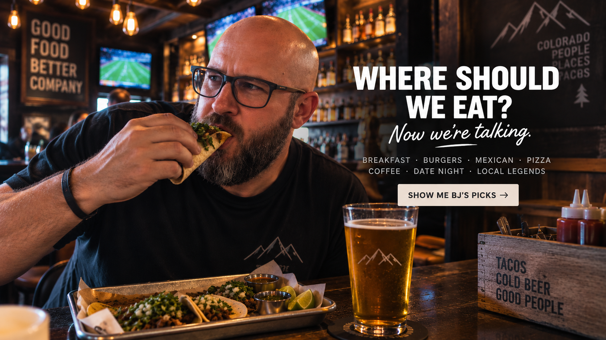

King's Chef Diner
Downtown Colorado Springs.
BJ'S COLORADO SPRINGS FOOD GUIDE
I'm not a food critic. These are just places I actually like and would send a friend who's hungry in Colorado Springs.

NO RANKINGS. NO PAID PLACEMENTS.
This isn't a list of every restaurant in town, and nobody paid to be here. Some are local institutions, some are chains, some are holes in the wall. If I like it, it can make the list.
BREAKFAST
Coffee, eggs, green chile and enough breakfast to make lunch completely unnecessary.
Downtown Colorado Springs.
Old-school diner breakfast.
Classic Colorado Springs breakfast.
BURGERS
No requirement that it be trendy, fancy or local. It just needs to be a burger I'd actually eat.
Yes, the bison burger counts.
I said what I said.
MEXICAN & TACOS
Apparently I have enough taco opinions that this section may eventually need its own website.
The spot on Fillmore.
Research & Woodmen.
PIZZA
This list is short on purpose. These are the two I'm sending you to.
COFFEE
Whether you're meeting somebody, working for an hour or just trying to become a functioning human again.
DATE NIGHT
Date night doesn't have to mean white tablecloths. Good food, drinks and somewhere you actually want to hang out works just fine.
BJ SAYS GO
These don't need to fit neatly into a category. They're just places I think deserve to be on the list.
Market plus tacos. That's enough of an explanation.
Another one that makes the taco list.
Tacos and drinks. The name pretty much handles this one.
WATCH THE GAME
When the game matters, I want TVs, food, drinks and people who understand why I'm yelling.
THIS LIST WILL CHANGE
Colorado Springs keeps changing and I'm always eating. If there's somewhere you think belongs on this list, send it my way.
NEED SOMETHING ELSE?
Food question, neighborhood question, house question — I'm pretty easy to find.
Contact BJ